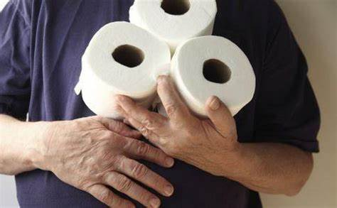
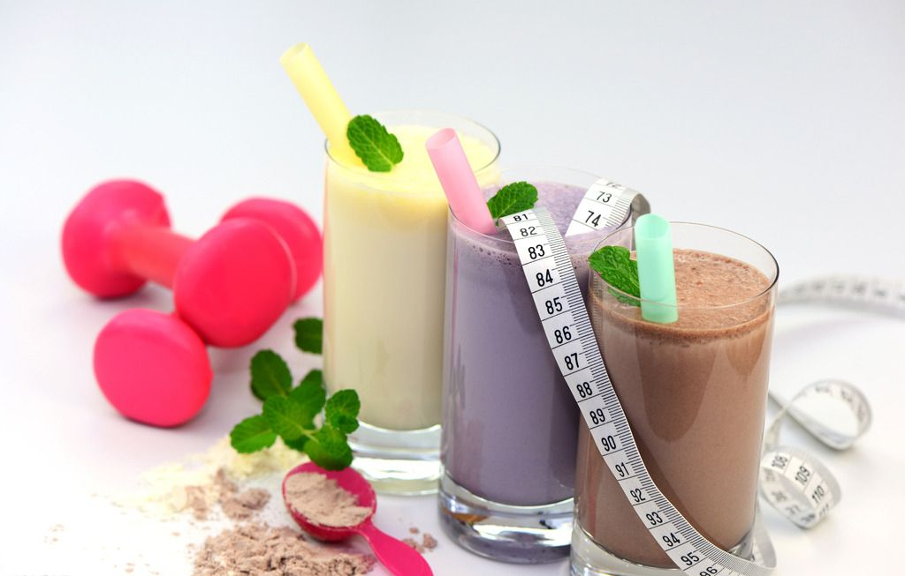
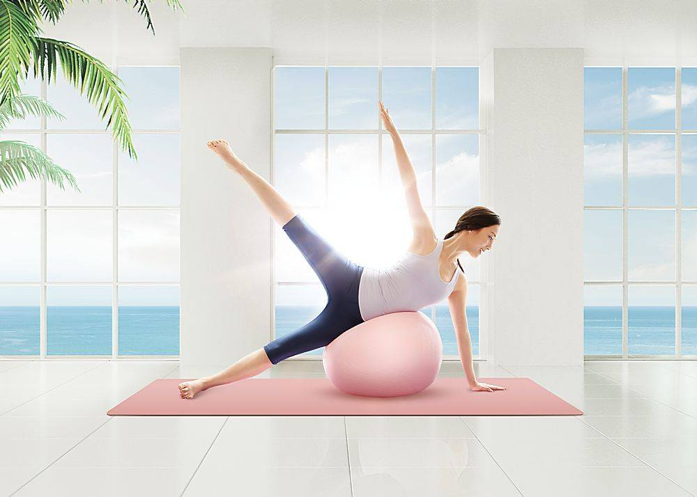

肥胖作为一种病态诞生至今已有百年，减肥的方式已经发展得五花八门，但错误的减肥方法不仅让你付出无数时间、金钱和精力却没有多大成效，还会在一次次的回弹中伤害你的身体。这就导致了市面上减肥乱象纵横的现象，减肥的方法无论正确和错误的都流出不少，以此而诞生的减肥产品数不胜数，在此为大家罗列以下几种，热衷于减肥事业的你中招了么？
六种错误的减肥方法

有些人一时减肥意志强烈，进行“节食减肥”，一天只吃进200卡以下食物热能，一个月内减掉8公斤体重，这种快速减肥成功的例子虽然不少，但不值得鼓励，原因是一阵强力减肥后，意志容易松懈而无法把减肥变成生活习惯的一部分，在减肥意志崩溃后，体重迅速回升。不怕脂减脂教练指出，盲目追求低热量而忽略营养的均衡万万不可取！身体细胞需要足够的营养素才能维持正常的代谢运作。

2、腹泻减肥（泻药：奥利司他、番泻叶、大黄等）
拉肚子是能减肥的，其优点与节食相当。因为吃进去的食物及营养还没有吸收就被排出体外，只过了嘴巴瘾。腹泻减肥的害处是显而易见的。拉肚子拉的是养料和大量的水分，时间久了会营养不良，消化系统功能紊乱以致受损.
拉肚子是能减肥的，其优点与节食相当。因为吃进去的食物及营养还没有吸收就被排出体外，只过了嘴巴瘾。腹泻减肥的害处是显而易见的。拉肚子拉的是养料和大量的水分，时间久了会营养不良，消化系统功能紊乱以致受损.
很多减肥失败的人都尝试过高温瑜珈或是蒸桑拿以大量的出汗来使自己体重下降，喝含利尿剂的茶是利用“脱水”来使体重暂时减弱，使用后会对血脂、血糖代谢产生很不好的影响，但这只是减去身体水分，少掉体重秤上的重量数字，没什么意义。这种改变只是暂时的，只要及时补充水分，体重就很快就涨回来了。只是脱水，谈不上减脂。

4、代餐减肥（蛋白质疗法、粗纤维疗法）
不少代餐产品的热量远低于减肥建议的最低热量标准，不适合大多数只是超重或稍微肥胖的人群，长期热量不足，尤其缺乏充足的碳水化合物，容易造成血糖不稳定、反应迟钝等后果。不是所有代餐产品都能提供丰富的营养素，或保证营养均衡而适合作为代餐，如：果蔬汁缺乏蛋白质、脂肪、大部分B族维生素、钙、铁等多种营养素。缺少脂肪，还会影响维生素A、D、E、K等脂溶性维生素的吸收，长期代餐减肥会导致营养不良，引起免疫功能下降等。
不少代餐产品的热量远低于减肥建议的最低热量标准，不适合大多数只是超重或稍微肥胖的人群，长期热量不足，尤其缺乏充足的碳水化合物，容易造成血糖不稳定、反应迟钝等后果。不是所有代餐产品都能提供丰富的营养素，或保证营养均衡而适合作为代餐，如：果蔬汁缺乏蛋白质、脂肪、大部分B族维生素、钙、铁等多种营养素。缺少脂肪，还会影响维生素A、D、E、K等脂溶性维生素的吸收，长期代餐减肥会导致营养不良，引起免疫功能下降等。
含有泻药的减肥药都是通过腹泻、食欲减退来减轻体重，停止服用后体重会迅速“反弹”。 含有食欲抑制剂的减肥药首要作用于神经中枢来抑制食欲，从而起到减肥功效，可造成血压升高、心率加快等等。含有神经类药物的减肥药作用于大脑神经，不是抑制食欲，而是让人体不吸收营养物质，加快新陈代谢从而减少吸收热量和消耗脂肪，但是长期服用会造成中风，心脏病，脑神经损伤，记忆力受损，出现脑血管问题以及精神状态不正常等重大后果，其潜在危险性大于减肥效果。

6、物理减肥（运动、针灸）
物理减肥比较容易反弹，你一松懈就会前功尽弃，所以利用物理减肥的人一定要坚持。还有就是物理减肥反弹后全身的肉都是松松的很难看。脸也会变成暗黄色的，看起来非常没有精神。
物理减肥比较容易反弹，你一松懈就会前功尽弃，所以利用物理减肥的人一定要坚持。还有就是物理减肥反弹后全身的肉都是松松的很难看。脸也会变成暗黄色的，看起来非常没有精神。